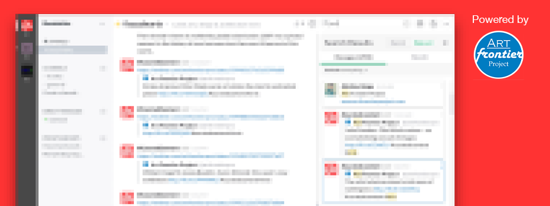

Here's your Reflect view
It's enclosed in the area below. To learn more about customizing Reflect embeds, visit our documentation.
=======
>>>>>>> Stashed changes
BuzzinArts Global | Trending New!
Launching new destination for arts people on Slack

<<<<<<< Updated upstream
=======
>>>>>>> origin/gh-pages
>>>>>>> Stashed changes